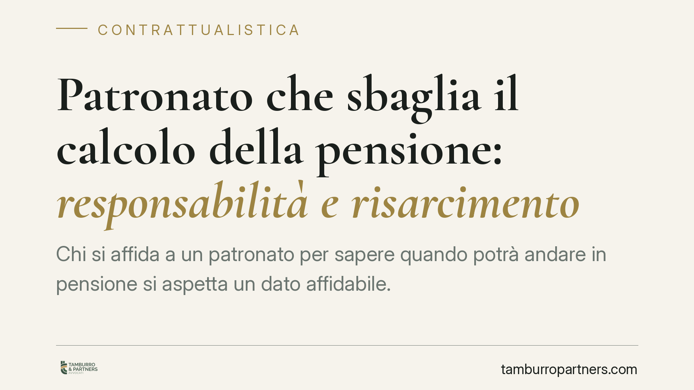

Patronato che sbaglia il calcolo della pensione: responsabilità e risarcimento
Chi si affida a un patronato per sapere quando potrà andare in pensione si aspetta un dato affidabile. Ma se il calcolo è errato e il lavoratore ne subisce un danno, il patronato può essere chiamato a rispondere a titolo contrattuale. La clausola che nega valore certificativo al conteggio non basta, da sola, a escludere ogni responsabilità.

Il contesto
Il rapporto tra lavoratore e patronato non è una cortesia informale. Nasce da un incarico e produce obblighi giuridici. Quando il patronato elabora un calcolo sulla data di maturazione del diritto a pensione, assume un impegno professionale: fornire un'informazione corretta e diligente.
Il problema emerge quando quel calcolo è sbagliato e la persona, confidando nel dato ricevuto, compie scelte irreversibili: rassegna le dimissioni, rifiuta un impiego, programma la cessazione dell'attività. Se poi scopre che la pensione arriverà più tardi del previsto, il pregiudizio può essere concreto.
Inquadramento normativo
Il punto di partenza è l'art. 1176, comma 2, c.c.: chi svolge un'attività professionale deve adoperare la diligenza qualificata, cioè quella propria del buon operatore del settore. Non basta la diligenza media del comune cittadino: si valuta la condotta rispetto allo standard atteso da un ente che offre assistenza previdenziale.
Su questa base si innesta la disciplina dell'inadempimento. L'art. 1218 c.c. addossa al debitore — qui il patronato — l'onere di provare di aver adempiuto correttamente o che l'inadempimento deriva da causa a lui non imputabile. È l'aspetto più delicato: non è il lavoratore a dover dimostrare la negligenza del patronato, ma il patronato a dover provare di aver operato a regola d'arte. Questa inversione dell'onere della prova sposta in modo significativo gli equilibri del contenzioso.
Sul piano delle funzioni, l'attività degli istituti di patronato è regolata dalla Legge 30 marzo 2001, n. 152, che ne definisce competenze e ambito di assistenza in materia previdenziale e assistenziale. Gli estremi della specifica pronuncia di legittimità richiamata sul tema sono in corso di verifica sulle fonti ufficiali e vengono pertanto omessi: resta invece consolidato l'impianto civilistico qui descritto, che prescinde dal singolo precedente.
Il valore della clausola "non ha valore di certificazione"
Molti conteggi riportano la formula secondo cui il calcolo "non ha valore di certificazione". È una clausola legittima, ma non è una liberatoria assoluta. Serve a chiarire che il dato definitivo spetta all'ente previdenziale (INPS), non a cancellare l'obbligo di diligenza nell'elaborazione.
In altre parole: il patronato può ricordare che la parola finale è dell'INPS, ma non può fornire un calcolo gravemente errato e poi trincerarsi dietro quella frase. Se l'errore è frutto di negligenza, la clausola non lo mette al riparo.
Implicazioni pratiche
Per il lavoratore significa che un conteggio sbagliato non è un fatto senza conseguenze. Se da quell'errore è derivato un danno misurabile, esiste una via risarcitoria di natura contrattuale, con i vantaggi probatori che ne derivano.
Attenzione però a un punto decisivo: l'errore, da solo, non basta. Il risarcimento presuppone un pregiudizio concreto e quantificabile e un nesso causale tra l'informazione errata e la scelta compiuta. Chi ha ricevuto un calcolo sbagliato ma non ha preso alcuna decisione fondata su di esso difficilmente potrà vantare un danno risarcibile.
Il pregiudizio tipico è il reddito perso nel periodo intercorrente tra la data erroneamente indicata e quella effettiva di decorrenza della pensione. Va documentato, non presunto.
Cosa fare in concreto
- Conserva ogni documento. Recupera il mandato o il modulo di incarico, il conteggio ricevuto e qualsiasi comunicazione scritta o e-mail con il patronato.
- Richiedi la posizione ufficiale all'INPS. Ottieni l'estratto conto contributivo e la corretta data di decorrenza, così da misurare lo scarto rispetto al dato errato.
- Ricostruisci le scelte compiute. Metti per iscritto quali decisioni hai preso confidando nel calcolo (dimissioni, rinunce, cessazione attività) e le relative date.
- Quantifica il danno. Determina il reddito effettivamente perso e ogni altra voce economica collegata, con prove documentali.
- Fai valutare il nesso causale. È opportuno far esaminare il caso da un legale per verificare il collegamento tra errore e pregiudizio e la correttezza della quantificazione prima di avviare qualsiasi azione.
In sintesi
Il patronato che elabora un calcolo previdenziale assume un obbligo di diligenza qualificata. Un errore può generare responsabilità contrattuale, con onere della prova a carico del patronato. Ma il risarcimento vive di prove: senza un danno documentato e un nesso causale solido, la contestazione resta priva di fondamento economico.
---
Contributo informativo a cura di Tamburro & Partners Avvocati — Avv. Giuseppe Tamburro. Non costituisce parere legale.
Ogni contratto ha il suo equilibrio.
Se vuoi una revisione delle clausole o una redazione su misura, scrivi allo studio. Ti rispondiamo entro un giorno lavorativo.